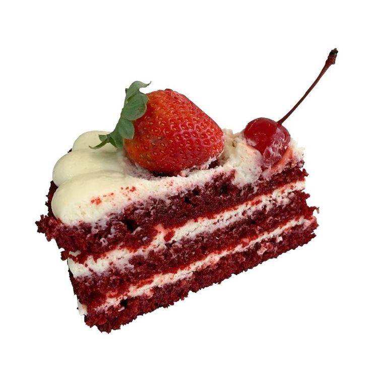

𝜗𝜚 ‧₊˚ ⊹⠀⋆ ˚｡⋆୨୧˚¨ ·.· ¨: `· . ୨୧⠀˚₊‧꒰ა ♡ ໒꒱ ‧₊˚ྀིྀ °❀⋆.ೃ࿔:･⠀

link da receita

Massa:
- 2 ovos
- 100 g de manteiga sem sal amolecida
- 1 colher (sopa) de vinagre branco
- 1 colher (chá) de essência de baunilha
- 4 colheres de corante alimentício líquido cor vermelha
- 5 colheres (sopa) de suco de limão
- 3 xícaras (chá) farinha de trigo
- 2 xícaras(chá) de açúcar refinado
- 1 colher (sopa) de cacau em pó (não pode ser achocolatado)
- 1 colher (chá) de sal
- 1 colher (sopa) de bicarbonato de sódio
- 1 colher (sopa) de fermento em pó
- 200 ml de leite integral
- 1 colher (sopa) de suco de limão
Cobertura e recheio:
100 g de manteiga sem sal amolecida
300 g de cream cheese
200 g de chocolate branco derretido
300 g de açúcar (de preferência o de confeiteiro)
1 colher (sopa) essência de baunilha
Opcional: você também pode fazer a cobertura/recheio buttercream com 200 g de manteiga sem sal em
temperatura ambiente, 150 g de açúcar confeiteiro e 1 colher (chá) de essência de baunilha <3